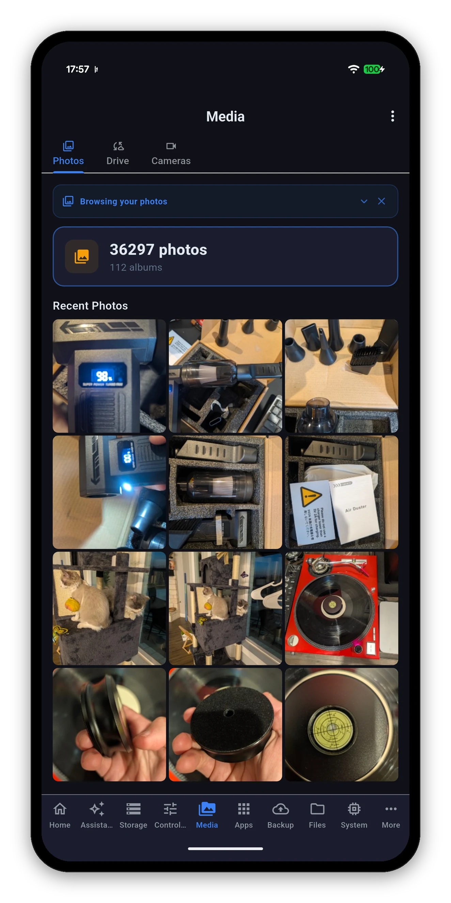
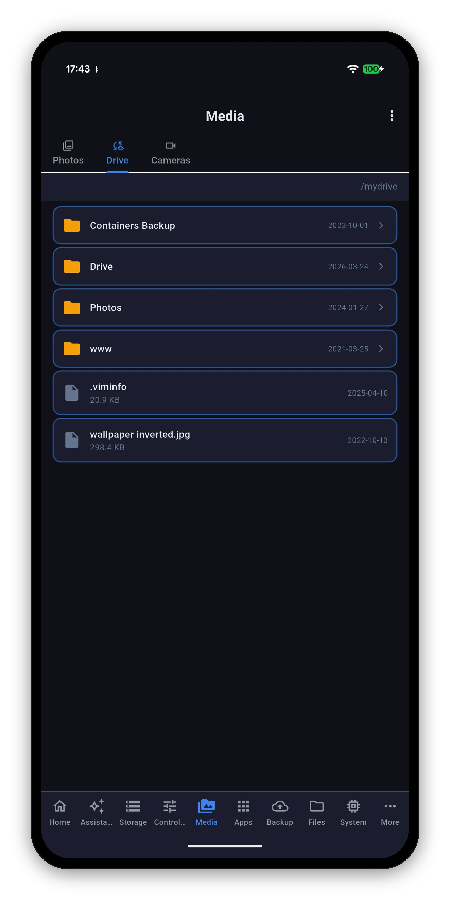
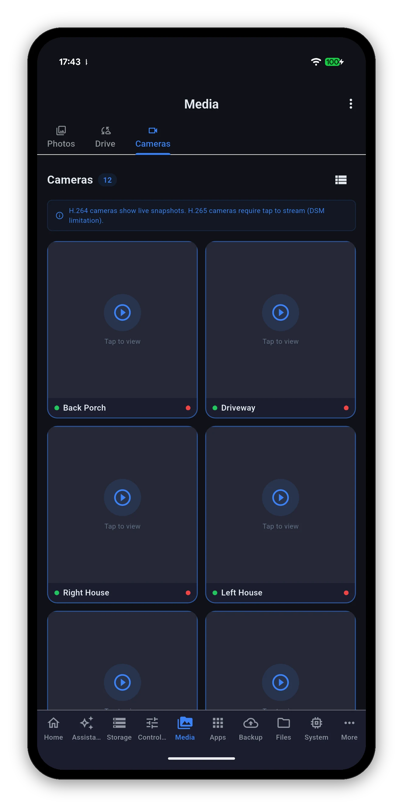
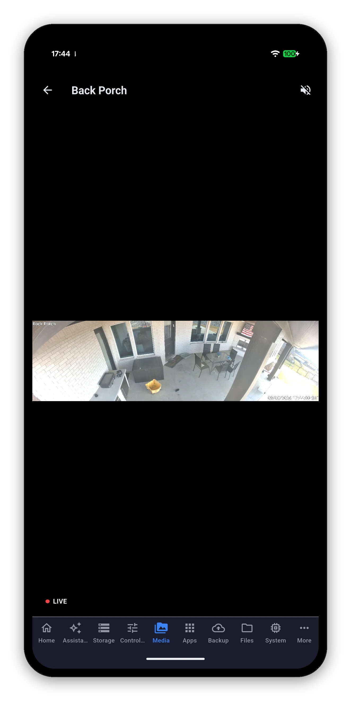

Three sub-views: Photos for your Synology Photos library, Drive for Synology Drive and team folders, and Cameras for Surveillance Station live view. All three work over QuickConnect, not just on your own network.

A summary at the top - how many photos, how many albums - then Recent Photos as a grid, and everything else a tap away.
On DSM 7.2.2 and later, the NAS stopped generating preview images for HEIC files - the format every recent iPhone shoots in. Clients that expect the NAS to have made a thumbnail get nothing, and show a broken tile.
Syno Manager decodes those photos on your device instead, which is what Synology's own app does. Your recent iPhone shots appear as pictures. It costs a little more work on the phone and nothing at all on the NAS.
Starts at /mydrive and navigates like a file browser, with team folders alongside your personal one.


Every camera Surveillance Station knows about, with a count at the top and a grid-or-list switch on the right. Your choice of layout is remembered.
There is one per-NAS toggle behind this, set when you add the NAS and changeable later: Tunnel camera live view through DSM port.
| Toggle | How the stream travels | Best for |
|---|---|---|
| Off (default) | Straight to RTSP on port 554. | Your own network. Lower latency, fewer hops. Needs port 554 reachable from wherever you are watching. |
| On | Tunnelled over the DSM HTTPS port you already connect on, as a secure WebSocket. | Watching from outside. Nothing extra to expose, because it reuses the port you already reach DSM on. |
Full-screen live view carries the camera name, a LIVE indicator while the stream is running, and a mute control. The timestamp burned into the picture follows the NAS clock, so it matches the recordings.
